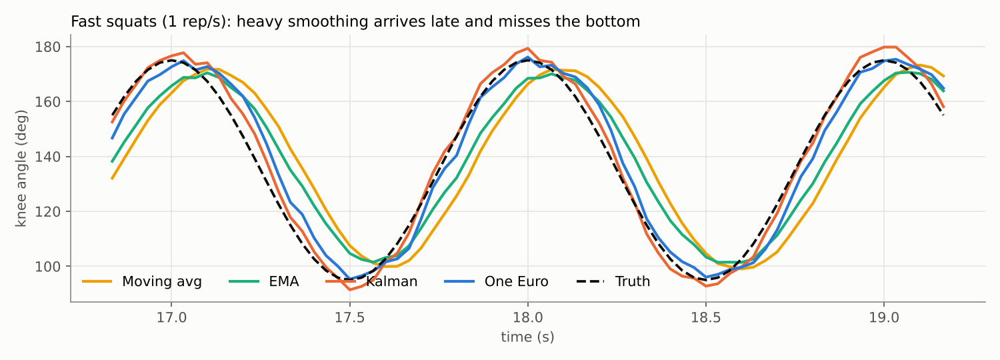
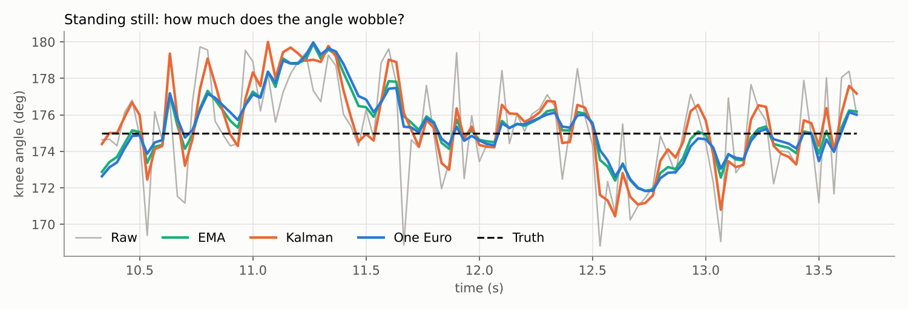

Smoothness vs. Latency
7.1 Filter lag
A causal filter can only use past samples, so any averaging pulls the output toward where the joint was. For linear filters this delay can be computed exactly:
| Filter (30 fps) | Theoretical delay | Measured lag on fast reps |
|---|---|---|
| Moving average, N = 7 | (N−1)/2 = 3 frames = 100 ms | 100 ms |
| EMA, α = 0.3 | (1−α)/α ≈ 2.3 frames ≈ 78 ms | 67 ms |
| One Euro, fc,min = 1, β = 15 | speed-dependent | 33 ms |
| Kalman CV, q = 10 | ≈ 0 in steady motion | 0 ms |
| Gaussian / Savitzky–Golay (offline) | 0 (but needs future frames) | 0 ms |
Measured lag is the shift that best aligns the filtered knee angle with the truth, with 1-frame (33 ms) resolution. The general rule behind the table: for a fixed linear filter, reducing noise variance by a factor k requires averaging over about k samples, and that pushes the delay up roughly in proportion. You cannot get both for free. The One Euro filter escapes this by changing k with speed; the Kalman filter escapes it by predicting forward with a velocity estimate.


7.2 Fast vs. slow exercises
Because the best setting depends on how fast joints move, a single global filter setting is a compromise. Suggested starting points (normalized coordinates, 30 fps):
| Exercise type | Examples | Priority | Starting point |
|---|---|---|---|
| Isometric / holds | Plank, wall sit, balance | No jitter | One Euro fc,min 0.5, β 5; or EMA α 0.15 |
| Slow, controlled | Tempo squats, PT range-of-motion | Accurate angles | One Euro fc,min 1.0, β 15 |
| Moderate speed | Push-ups, lunges, curls | Correct rep count | One Euro fc,min 1.0, β 30; or Kalman q 10–20 |
| Explosive | Jump squats, swings, sprints | Low lag, peak values | Kalman q 20–60 with gating; or a higher camera fps |
These are starting values from our experiment and should be tuned with the procedure in Section 4.4. Another option is to switch settings by exercise phase: heavier smoothing while the person is setting up or holding, lighter during the working set.
7.3 Why too much smoothing can damage motion measurements
Lag is easy to see. The more serious problem for exercise analysis is attenuation: a low-pass filter shrinks fast peaks. In our fast-squat phase (1 rep/s), the average error at the bottom of each rep was:
| Filter | Bottom-of-rep angle error | Effect |
|---|---|---|
| Moving average | +4.9° | Squat reported shallower than real |
| EMA | +6.7° | Squat reported shallower than real |
| One Euro | +1.3° | Close |
| Kalman | −2.2° | Overshoot: reported deeper than real |
(Positive = filtered minimum angle is larger than the true minimum. During slow reps all causal filters were within about 3°.) If an app checks "did the user reach 90° knee flexion?", a heavily smoothed signal can tell a user who did reach depth that they did not. The same happens to peak angular velocity, which coaches use as a power proxy: an over-smoothed signal underestimates it, and an under-smoothed one overestimates it because of jitter. In our test the raw signal's peak angular velocity was 424°/s against a true 251°/s, while moving average and EMA gave about 265°/s.
Biomechanics pipelines care about this. Eghbalian and Desai show that errors from the upstream pose estimator carry through into downstream kinematic, kinetic and muscle-level predictions [10]; a filter that distorts the trajectory adds its own error on top.
7.4 Real-time constraints on mobile devices
On a phone, the filter's compute cost is negligible. In our Python timing, one One Euro update took about 1.5 µs and a NumPy Kalman update about 20 µs (most of that is NumPy overhead on tiny matrices; the hand-written JavaScript version in this site has no matrices). Even 66 Kalman filters is under 2 ms, while the pose network itself typically takes tens of milliseconds per frame. What matters on mobile is latency and timing:
- End-to-end budget. Camera capture + inference + filter delay + rendering. Live feedback that should feel immediate leaves little room for 100 ms of filter delay on top of everything else.
- Variable frame rate. Phones throttle when hot and skip frames when busy. Use real timestamps (Te, Δt) instead of assuming 30 fps; the EMA-from-cutoff formula, One Euro and Kalman all support this directly, a fixed-N moving average does not.
- Lower fps is worse twice. At 15 fps each frame of lag is 67 ms instead of 33 ms, and motion blur is larger.
- Display vs. analytics can differ. The skeleton drawn on screen can use light smoothing for responsiveness, while the rep counter can use a few frames of delayed interpolation or even an offline smoother at the end of each rep, since a count shown 100 ms late is fine.
Summary
- Fixed linear filters trade noise for delay: MA-7 = 100 ms, EMA(0.3) ≈ 70–80 ms at 30 fps.
- Smoothing also shrinks peaks: squat depth was underestimated by 5–7° with MA and EMA on fast reps.
- Pick settings per exercise speed, and consider separate filters for display and analytics.
- On mobile, the issue is latency and variable frame timing, not compute.